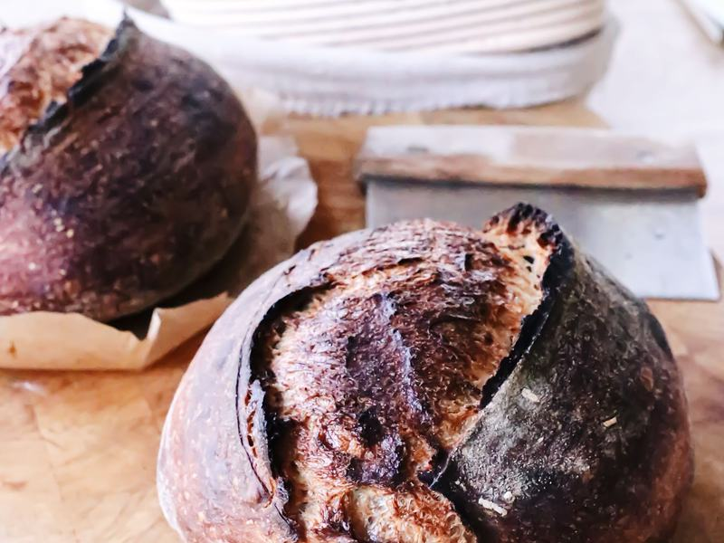
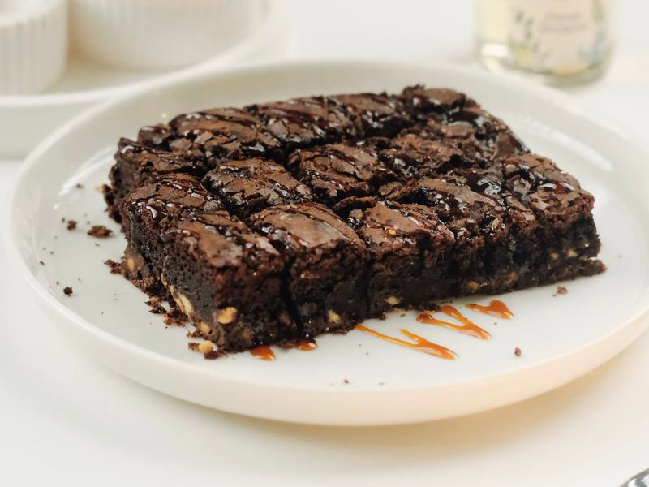
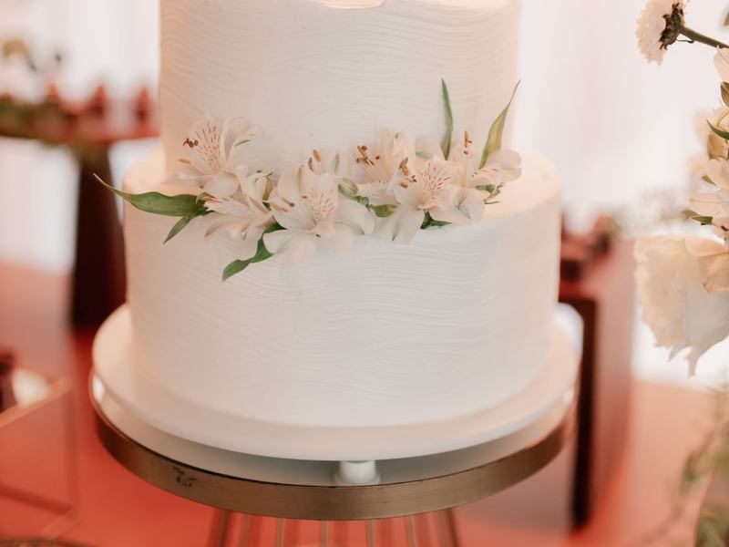

Baked with Butter, Time, and a Little Copper Magic
Step into The Copper Loaf, where the ovens never stop humming and the smell of warm crust and cinnamon drifts out onto the sidewalk before the sun's even fully up.
At The Copper Loaf Bakery, we believe bread should crackle when you tear it, pastries should flake onto your plate, and cake should taste like someone's grandmother made it — because in a way, ours did. Every item that leaves our kitchen is mixed, proofed, shaped, and baked by hand, using slow fermentation, real butter, and flour we trust. No shortcuts, no fillers, no rushing what needs time.
Whether you're grabbing a flaky croissant on your way to work, picking up a loaf of our signature rosemary sourdough for dinner, or ordering a cake for the biggest day of someone's life, we want your visit to feel like coming home to a kitchen that's always warm.
Fresh From the Oven This Week

Rosemary Sea Salt Sourdough
A crackling, deeply golden crust gives way to an open, chewy crumb studded with fragrant rosemary and finished with a scatter of flaky sea salt. Fermented for 36 hours for a flavor that's tangy, complex, and utterly addictive.
R65
Almond Butter Croissant
Laminated dough rolled thirty-six times, folded around a rich almond frangipane, and baked until the layers shatter at the first bite. Dusted with toasted almonds and a whisper of powdered sugar.
R48

Salted Caramel Brownie
Dense, fudgy, and edged with a delicate crackly top, our brownie is swirled with house-made salted caramel that oozes with every warm forkful.
R38

Classic Vanilla Bean Celebration Cake
Layers of tender vanilla bean sponge, filled and finished with silky Swiss meringue buttercream. Simple, timeless, and endlessly customizable for your next occasion.
The rosemary sourdough has ruined supermarket bread for my whole family. We plan our Saturday mornings around it.
Thandi M. · Downtown regular
They made our wedding cake and it was the first thing guests talked about. Elena listened to every detail we cared about.
Pieter & Anika V. · Custom cake
Best almond croissant I have had outside of Paris. The Northside team always remembers my coffee order too.
Sipho K. · Northside regular
Celebrating Something Sweet?
From first birthdays to golden anniversaries, we've been trusted to bake the centerpiece of countless celebrations. Tell us your vision, and we'll bring it to life, one layer at a time.